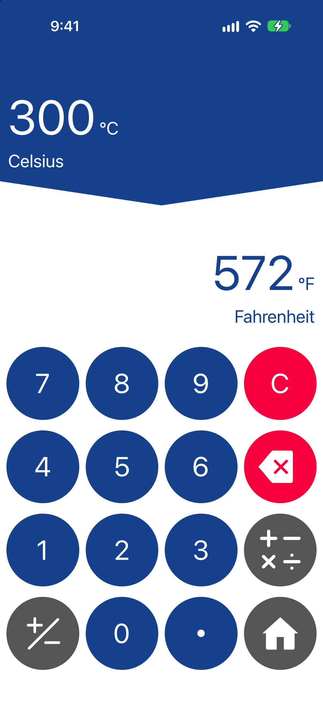
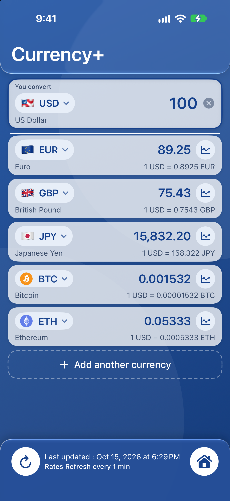
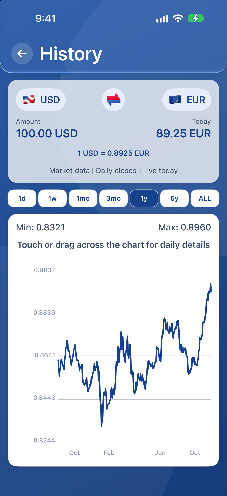

Simple & Carousel modes
Keep one conversion clear, or compare multiple units together. Ultra simplified mode reduces keypad clutter; the 2016 classic mode brings back the original interface.
Conversion Calculator Plus · iPhone & iPad
A unit, money and currency converter for everyday essentials and engineering tools. Convert measurements, compare crypto and exchange rates, and keep useful results close.
Currency rates refreshed every minute.
Currency+ refreshes rates every minute while its rates page is visible, the app is active and connected. Compare hourly and daily alternatives. Keep loaded rates and charts available offline.
Free to download. Optional Premium subscription.
No full-page ads. Banner ads appear in the free version.

01 / What is the app?
Conversion Calculator Plus is an all-in-one conversion calculator for iPhone and iPad. It brings a unit converter, currency converter, cryptocurrency converter and expression calculator into one app.
Switch from metric and imperial measurements to a money conversion, check several currencies in Currency+, or reuse a result from automatic conversion history. Simple and Carousel modes let you choose how much to see at once.
Compare 11 US App Store alternatives ↗Conversion Calculator Plus checks for updated rates every minute in Currency+ while its rates page is visible, the app is active and you are connected. Units Plus states daily downloads; Currency converter calculator! and GlobeConvert state hourly updates; Converter+ states automatic updates every six hours or on request. This represents a shorter documented automatic refresh interval than the four named alternatives.
| App | Published automatic rate schedule | Conditions and source |
|---|---|---|
| Conversion Calculator Plus | Every minute in Currency+ | Rates page visible, app active and connected. Our update policy. |
| Unit Converter - Best Unit App | Once daily when opened | Publisher’s stated schedule |
| Currency converter calculator! | Every hour | Publisher’s stated schedule |
| GlobeConvert Currency & Units | Every hour | Publisher’s stated schedule |
| Converter+ (Units, Currencies) | Every six hours or on request | Publisher’s stated schedule |
For the other seven competitors, a numeric automatic interval is not established by the reviewed descriptions. A faster request schedule does not guarantee a new underlying market quote or greater accuracy. Manual refresh can be available. The one-minute policy does not apply to background or widget updates.
Read competitor review concerns and our documented alternatives ↗
02 / How it works
Choose length, temperature, currency or another category. Search for a unit if you already know what you need.
Select your starting and destination units. Use the calculator for a value such as 12.5 × 2 before converting.
Read the converted value, compare more units in Carousel mode, or return to history and favorites for work you repeat.
Explore the full catalog
Browse all 72 categories and 685 measurement units, plus 289 selectable world currency, crypto and precious-metal codes.
03 / Main features
From an inch to a meter, a Celsius reading to Fahrenheit, or a dollar to a euro: choose the tools that suit the question.
Keep one conversion clear, or compare multiple units together. Ultra simplified mode reduces keypad clutter; the 2016 classic mode brings back the original interface.
Compare several currencies in one list, including supported world currencies, Bitcoin, Ethereum and other crypto, plus gold, silver, platinum and palladium quotes.
Currency+ checks for updated rates every minute while its rates page is open, the app is active and you are connected. Previously loaded rates and currency charts stay available offline. Without internet, saved data does not become a new live quote.
Calculate expressions, keep an automatic conversion history and save the converters you use most. Return to an earlier result without setting everything up again.
Convert from your Home Screen and use saved conversions hands-free with Siri. Interactive widgets and Siri actions require Premium. Set up Siri and Shortcuts ↗
Find fuel economy, running pace, shoe and ring sizes, force, torque, pressure, power, energy, electrical units, data storage and other specialist categories.


Know the context
A currency conversion is an indicative comparison, not a bank transfer. Check the timestamp and your bank or card provider’s fees before paying.
Explore Currency+ and charts ↗Currency+ & Currency History
Compare several currencies together, calculate a total before converting, and open a chart to understand how a pair has changed.
A refresh checks for the latest available data; a source may return the same rate. The displayed update time helps you judge how recent your data is.
Available history depends on the currency pair and its data. Currency History shows exchange rates; automatic conversion history keeps your earlier calculations.
Chart gestures
Chart controls let you explore both time and rate changes without losing one-finger point selection.
04 / Audience segments
Compare USD, CAD, GBP, EUR, peso and yen amounts; understand local temperatures and sizes; keep loaded rates available away from Wi-Fi.
Explore metric and imperial relationships, check homework arithmetic and keep the unit alongside the number.
Move between pressure, torque, energy, power, electrical and data units. Keep recurring calculations in favorites.
Compare cooking volumes, temperature, weight, distance, pace and fuel economy. Check the unit system before using a recipe or mileage figure.
05 / Good testimonials from App Store reviews
Selected positive excerpts from genuine App Store reviews. These reflect individual experiences with earlier app versions.
★★★★★
“Great for traveling and even baking!”
★★★★★
“Use it everyday and enjoy how easy it is”
★★★★★
“Been very useful for many projects”
Learn & compare
Read our source-linked comparison of 11 US storefront competitors, with specific reasons to choose our app, rival strengths and dated product facts.
One-minute Currency+ updates versus four published slower schedules, plus features and dated review concerns across 11 US App Store competitors.
Read the guide Application comparisonLatest-version US App Store review findings, documented Conversion Calculator Plus capabilities and source-linked comparisons.
Read the guide Advertising comparisonCurrent-version US App Store reports about advertising interruptions, keypad obstruction and difficult dismissal, compared with Conversion Calculator Plus’s stated ad policy.
Read the guide Currency+ and chartsCompare multiple currencies, calculate expressions, refresh rates every minute, explore exchange-rate history and learn the two-finger chart controls available in current releases.
Read the guide GuidesCompare iPhone conversion apps by workflow, including Conversion Calculator Plus’s once-per-minute connected rate updates, unit tools and offline reference.
Read the guide Everyday conversionsA practical unit converter can make travel, cooking, shopping, exercise, schoolwork, home projects and fuel planning easier.
Read the guide Conversion basicsConvert meters, feet, kilograms, pounds and temperatures with worked examples, and learn why a US gallon differs from an Imperial gallon.
Read the guide Travel and currencyPrepare currency pairs before a trip, use previously saved exchange rates without a connection, and understand why a displayed quote may differ from your bank transaction.
Read the guideQuick answers
It is free to download. The free version includes banner ads, with no full-page ads. Premium is an optional renewing subscription that removes banners and unlocks interactive widgets and Siri conversions. See the App Store for your local price.
Previously loaded rates and charts can be used offline. Fresh rates require a connection. Always check the date of saved currency data.
Pinch to zoom both axes, drag with two fingers to pan, and double-tap to reset. One-finger taps and drags select a reading. See the chart guide.
No. It compares amounts and converts units. It is not a money-transfer, brokerage or trading service.
Yes. The app supports iPhone and iPad. The App Store listing provides current iOS compatibility and language availability.
Support
For a question, bug report or unit request, email strikespark.feedback@gmail.com. Include your device, iOS version and the units and value you were using.
Manage a subscription in Settings → your name → Subscriptions. Apple handles purchases, cancellations and refunds.
Get Conversion Calculator Plus ↗